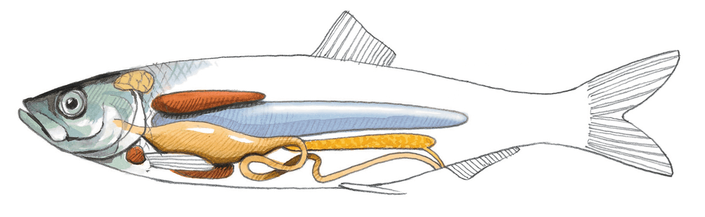
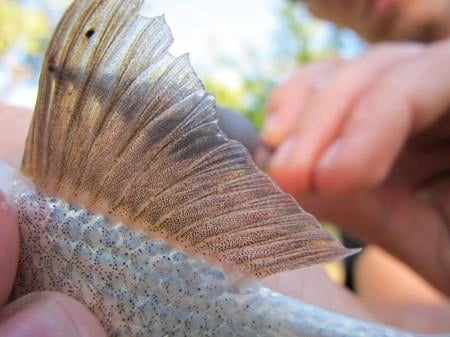

Best AI Website Creator
Fisken kan fylde luft i svømmenblæren, eller tømme luft af den. Alt efter om den skal op eller ned. Svømmeblæren er markeret med blåt.
Benfiskene opstod i devontiden for ca. 420 millioner år siden og udgør i dag langt den største gruppe hvirveldyr med over 30.000 kendte arter. Langt de fleste af de fisk du kender er benfisk
Svømmeblæren er en af de vigtigste innovationer i hvirveldyrenes evolution. Den opstod sandsynligvis fra en primitiv lungesæk – et organ til at hente luft ved overfladen i iltfattige vande. Da have og søer i devontiden periodisk manglede ilt (på grund af store mængder rådnende plantemateriale), var evnen til at supplere med ilt fra overfladen en kæmpe fordel.
Hos langt de fleste moderne benfisk er svømmeblæren omdannet til et opdriftsorgan. Det er en revolutionerende opfindelse: fisken kan nu "svæve" på en given dybde uden at bruge energi på at modvirke tyngdekraften. Det frigiver energi til at søge føde, flygte fra fjender og reproducere sig.
Knogleskelettet tillader meget finere specialisering af kroppen. Tænder, kæber, finner og kroppen selv kan antage tusindvis af former alt efter, hvad en art spiser og hvordan den lever. Det er grunden til, at knoglefiskene er langt den mest artsrige gruppe hvirveldyr.

Strålefinner består af hud udspændt på benstråler. De giver manøvredygtighed og kan foldes ind, så de ikke giver modstand.
Skelet af knogle: Stærkere end brusk, men stadig smidigt. Giver fx give større hurtighed
Svømmeblære: Et gasfyldt organ der giver opdrift, så fisken kan hænge i ro på en given dybde uden konstant at svømme.
Strålefinner: De fleste benfisk har strålefinner, som er helt tynde finner.
Best AI Website Creator